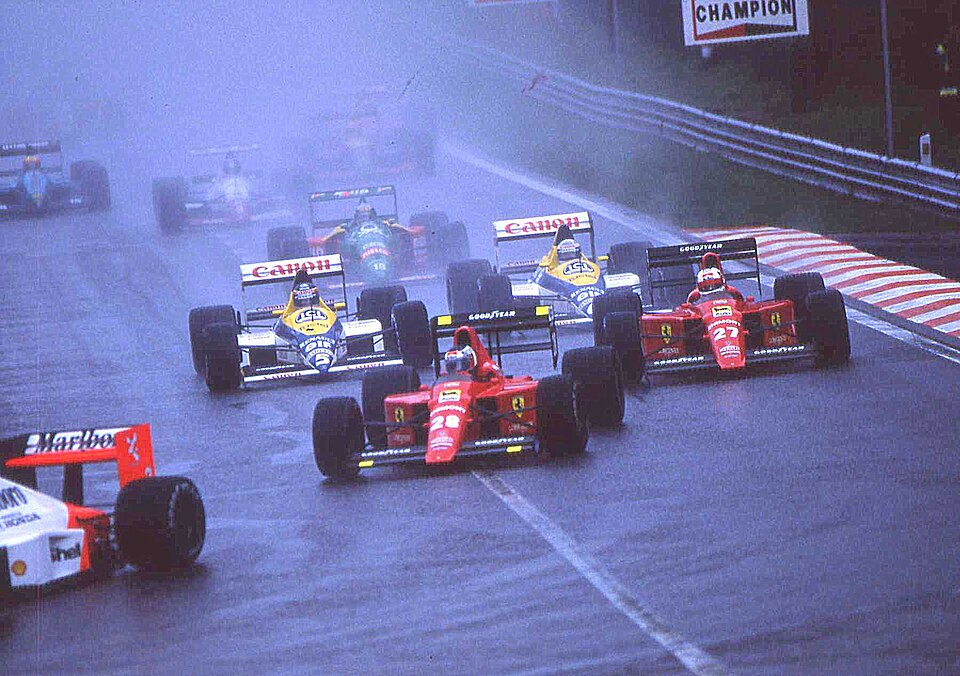
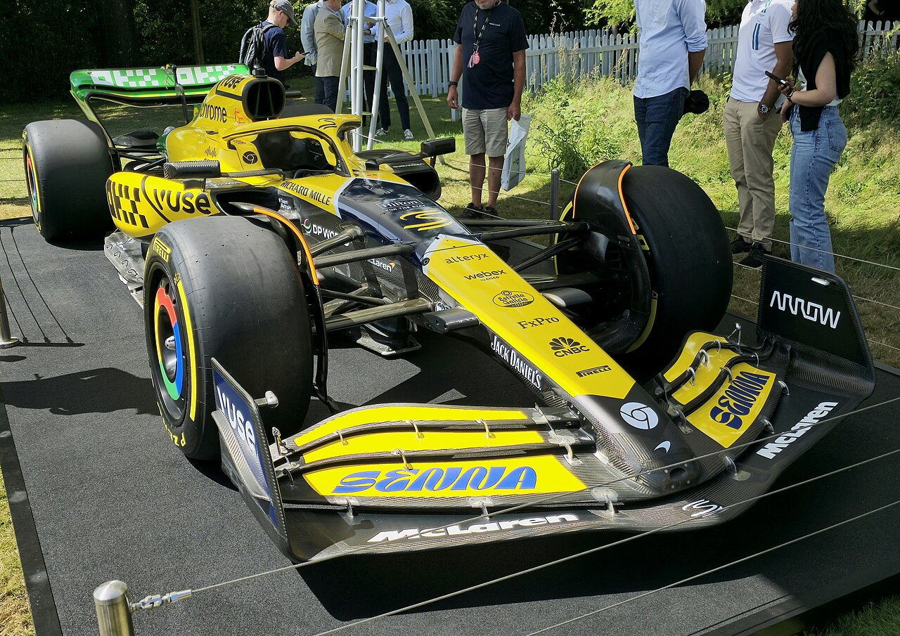

History of Formula 1
The FIA Formula One World Championship began in 1950 at Silverstone, UK. In 2026 the sport enters a new rules cycle — but the story below spans more than seven decades of racing.

Final Project · Berkay Gündoğdu · 2026 F1 Season
The FIA Formula One World Championship began in 1950 at Silverstone, UK. In 2026 the sport enters a new rules cycle — but the story below spans more than seven decades of racing.

Giuseppe Farina won the first title in 1950 driving for Alfa Romeo. Juan Manuel Fangio dominated the decade with five championships. Cars had front engines, narrow tyres, and almost no safety equipment by modern standards.
Turbocharged engines produced extreme power. Ayrton Senna and Alain Prost fought legendary battles at McLaren. Ground-effect aerodynamics made cars faster but more dangerous until rules changed.
Michael Schumacher won five consecutive titles with Ferrari (2000–2004). The era also saw improved TV coverage, more Asian races, and the rise of teams like Renault and McLaren as title contenders.
1.6-litre V6 turbo hybrid power units replaced V8 engines in 2014. Mercedes won eight consecutive constructors' titles. Lewis Hamilton matched Schumacher's seven championships.
Ground-effect cars returned in 2022. Max Verstappen dominated early in the decade before McLaren's rise. A cost cap limits spending, and 2026 introduces new power units, active aero, and an 11-team grid including Cadillac.
